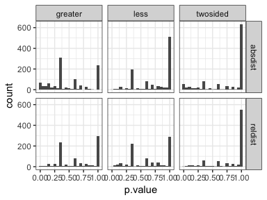

Interval statistics
Jay Hesselberth
November 19 2016
valr can be used to explore relationships between sets of intervals. Here we explore the relationship between transcription start sites and repetitive elements in the human genome.
library(valr)
library(dplyr)
library(ggplot2)
library(tidyr)
library(broom)
# load repeats and genes. Data in the valr package is restricted to chr22; the entire
# files can be downloaded from UCSC.
rpts <- read_bed(valr_example('hg19.rmsk.chr22.bed.gz'), n_fields = 6)
gens <- read_bed(valr_example('hg19.refGene.chr22.bed.gz'), n_fields = 12)
# load chrom sizes
chrs <- read_genome(valr_example('hg19.chrom.sizes.gz'))
# create 1bp intervalss representing transcription start sites
tss <- mutate(gens,
.start = ifelse(strand == '+', start, end),
.end = start + 1) %>%
select(chrom, start = .start, end = .end, name)
tss
#> # A tibble: 1,267 × 4
#> chrom start end name
#> <chr> <int> <dbl> <chr>
#> 1 chr22 16193009 16150529 NR_122113
#> 2 chr22 16157078 16157079 NR_133911
#> 3 chr22 16162065 16162066 NR_073459
#> 4 chr22 16162065 16162066 NR_073460
#> 5 chr22 16231289 16199674 NR_132385
#> 6 chr22 16287937 16256332 NM_001136213
#> 7 chr22 16274608 16274609 NR_046571
#> 8 chr22 16449804 16448824 NM_001005239
#> 9 chr22 17073700 17071648 NM_014406
#> 10 chr22 17082800 17082801 NR_001591
#> # ... with 1,257 more rowsFirst we define a function that takes x and y intervals and computes distance statistics (using bed_reldist() and bed_absdist()) for specified groups.
gen_stats <- function(x, y, genome, grp, type = NA) {
group_by_(x, .dots = grp) %>%
do(reldist = bed_reldist(., y, detail = TRUE) %>%
select(.value = .reldist),
absdist = bed_absdist(., y, genome) %>%
select(.value = .absdist_scaled)
) %>%
gather_('stat', 'value', setdiff(names(.), list(grp))) %>%
mutate(type = type)
} obs_stats <- gen_stats(rpts, tss, chrs, 'name', 'obs')
shfs <- bed_shuffle(rpts, chrs, within = TRUE)
shf_stats <- gen_stats(shfs, tss, chrs, 'name', 'shuf')
res <- bind_rows(obs_stats, shf_stats) %>%
unnest(value) %>%
group_by(name, stat, type) %>%
mutate(.id = row_number()) %>%
spread(type, .value) %>%
na.omit()
res
#> Source: local data frame [16,783 x 5]
#> Groups: name, stat [1,917]
#>
#> name stat .id obs shuf
#> <chr> <chr> <int> <dbl> <dbl>
#> 1 (A)n absdist 1 126.4610794 398.3905
#> 2 (A)n absdist 2 5.6050746 390.5459
#> 3 (A)n absdist 3 1.0093609 390.1060
#> 4 (A)n absdist 4 0.1585214 338.5905
#> 5 (A)n absdist 5 1.0203258 325.9782
#> 6 (A)n absdist 6 0.5561215 296.1639
#> 7 (A)n absdist 7 0.3557903 234.3513
#> 8 (A)n absdist 8 0.2337938 186.5005
#> 9 (A)n absdist 9 0.6456680 155.8682
#> 10 (A)n absdist 10 3.3093910 126.6239
#> # ... with 16,773 more rowsNow that the data are formatted, we can use ks.test() to determine whether there are significant differences between the observed and shuffled data for each group.
pvals <- res %>% do(twosided = broom::tidy(ks.test(.$obs, .$shuf)),
less = broom::tidy(ks.test(.$obs, .$shuf, alternative = 'less')),
greater = broom::tidy(ks.test(.$obs, .$shuf, alternative = 'greater'))) %>%
gather(alt, type, -name, -stat) %>%
unnest(type) %>%
select(name:p.value) %>%
arrange(p.value)
ggplot(pvals, aes(p.value)) +
geom_histogram(binwidth = 0.05) +
facet_grid(stat ~ alt) + theme_bw()
We can also assess false discovery rates (q.values) using p.adjust().
pvals <- group_by(pvals, stat, alt) %>%
mutate(q.value = p.adjust(p.value)) %>%
ungroup() %>%
arrange(q.value)Finally we can visualize these results using stat_ecdf().
res_fold <- res %>%
gather(type, value, -name, -stat, -.id)
signif <- head(pvals, 25)
res_signif <- signif %>% left_join(res_fold, by = c('name','stat'))
ggplot(res_signif, aes(x = value, color = type)) +
stat_ecdf() +
facet_wrap(name ~ stat) + theme_classic() + scale_x_log10()